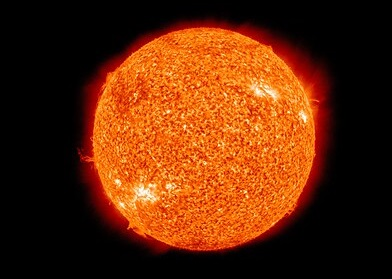
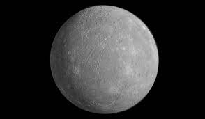
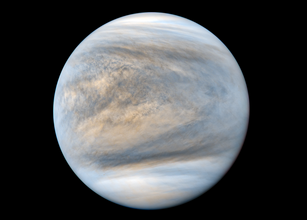
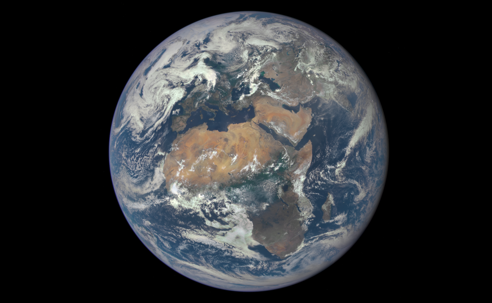
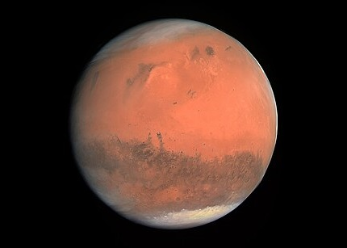
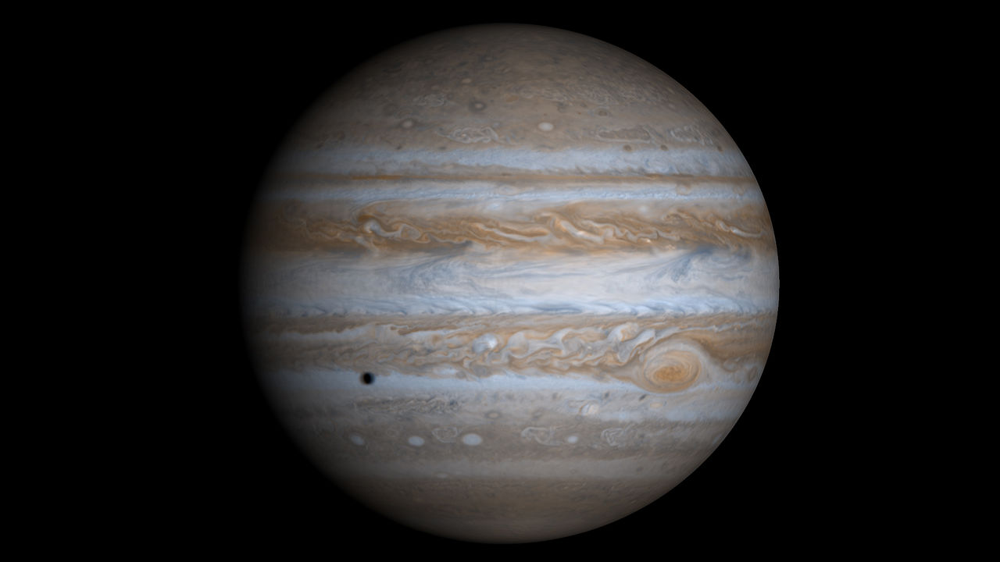
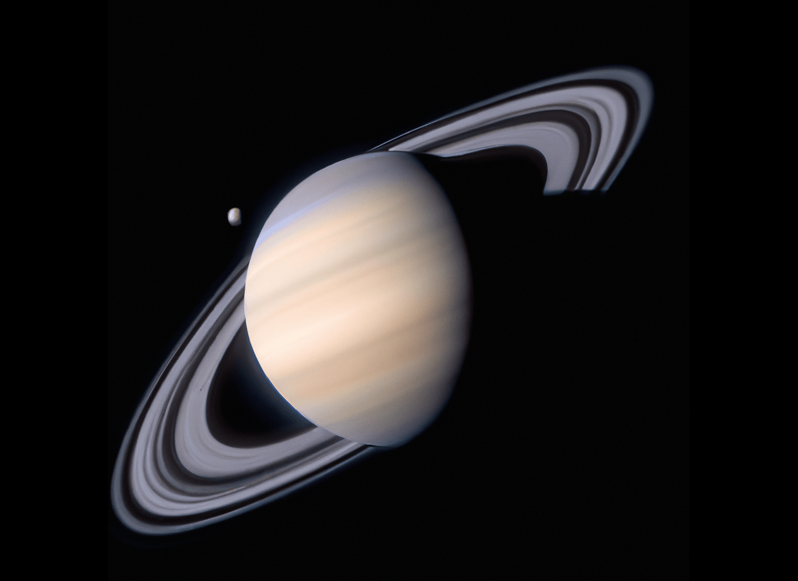
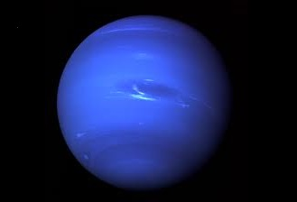
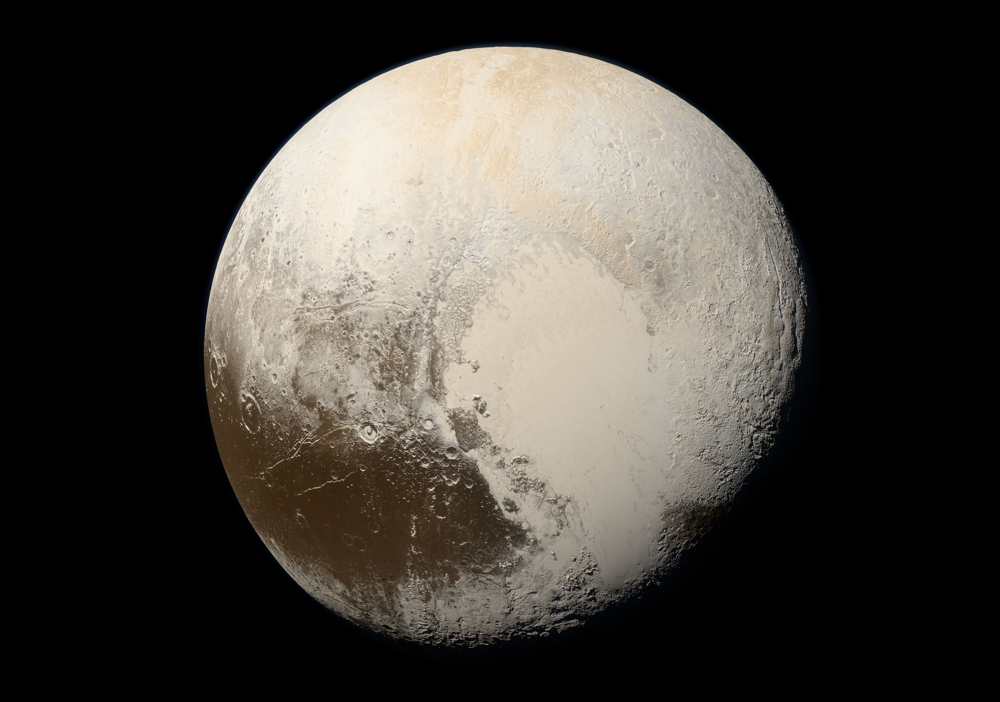

Солнце
Центр Солнечной системы
Солнце содержит 99.86% всей массы Солнечной системы.
Меркурий - самая маленькая планета, чуть больше Луны.
На Венере день длится дольше года.
Марс имеет самую большую вулканическую гору в Солнечной системе.
Юпитер настолько массивен, что мог бы стать звездой.
Кольца Сатурна состоят из частиц льда и камня.
Уран вращается "на боку", его ось наклонена почти на 98 градусов.
Нептун - самая дальняя планета и его ветры дуют со скоростью 2 100 км/ч.
Наша Солнечная система – это грандиозное космическое пространство, в центре которого находится яркая звезда – Солнце. Вокруг него вращаются восемь планет, каждая из которых уникальна по своим характеристикам и условиям. Помимо планет, здесь есть карликовые планеты, спутники, кометы, астероиды и другие космические объекты, составляющие сложную и гармоничную систему.
Мы приглашаем вас отправиться в увлекательное путешествие по этому космосу: узнать больше о загадках Марса, величии Юпитера, кольцах Сатурна и далекой холодной Плутоновой орбите. На страницах нашего сайта вы найдете интересные факты, последние научные открытия, а также уникальные изображения и видео.
Погружайтесь в тайны Солнечной системы вместе с нами, исследуйте и расширяйте свои горизонты!
Галерея планет


Меркурий
1-я планета
58 млн км от Солнца
1-я планета
58 млн км от Солнца

Венера
2-я планета
108 млн км от Солнца
2-я планета
108 млн км от Солнца

Земля
3-я планета
150 млн км от Солнца
3-я планета
150 млн км от Солнца

Марс
4-я планета
228 млн км от Солнца
4-я планета
228 млн км от Солнца

Юпитер
5-я планета
778 млн км от Солнца
5-я планета
778 млн км от Солнца

Сатурн
6-я планета
1.43 млрд км от Солнца
6-я планета
1.43 млрд км от Солнца

Уран
7-я планета
2.87 млрд км от Солнца
7-я планета
2.87 млрд км от Солнца

Нептун
8-я планета
4.5 млрд км от Солнца
8-я планета
4.5 млрд км от Солнца

Плутон
Карликовая планета
5.9 млрд км от Солнца
Карликовая планета
5.9 млрд км от Солнца
Спутники солнечной системы — это настоящие природные спутники планет, которые играют важную роль в их динамике и истории. Давайте погрузимся в этот увлекательный мир и откроем его уникальные тайны!
История астрономии — это путешествие через тысячелетия, где наука и мистицизм переплетаются, а небесные тела играют ключевую роль в жизни человечества. Однако с развитием астрономии и началом систематического изучения солнечной системы, наше восприятие этих небесных тел изменилось.
Хотите проверить свои знания? Сыграйте в игру на знание планет солнечной системы!
Познакомьтесь с планетами, спутниками и другими объектами нашей Солнечной системы, подписавшись на рассылку. Получайте новости о планетах, космосе и новейших миссиях прямо в свой почтовый ящик.
Присоединяйтесь к нашему космическому путешествию!